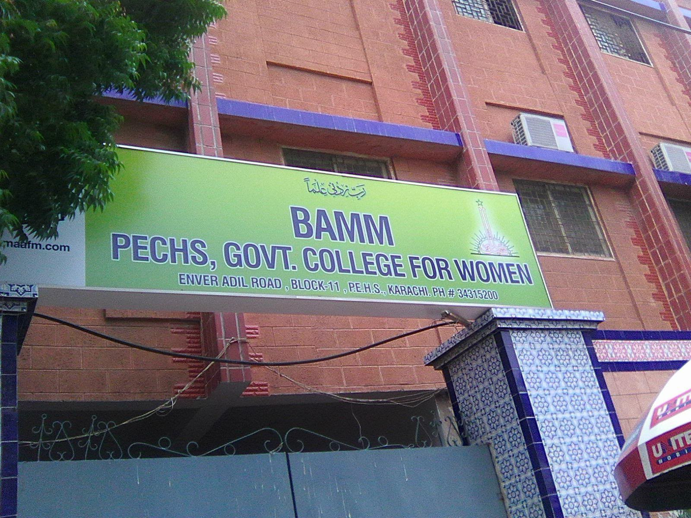
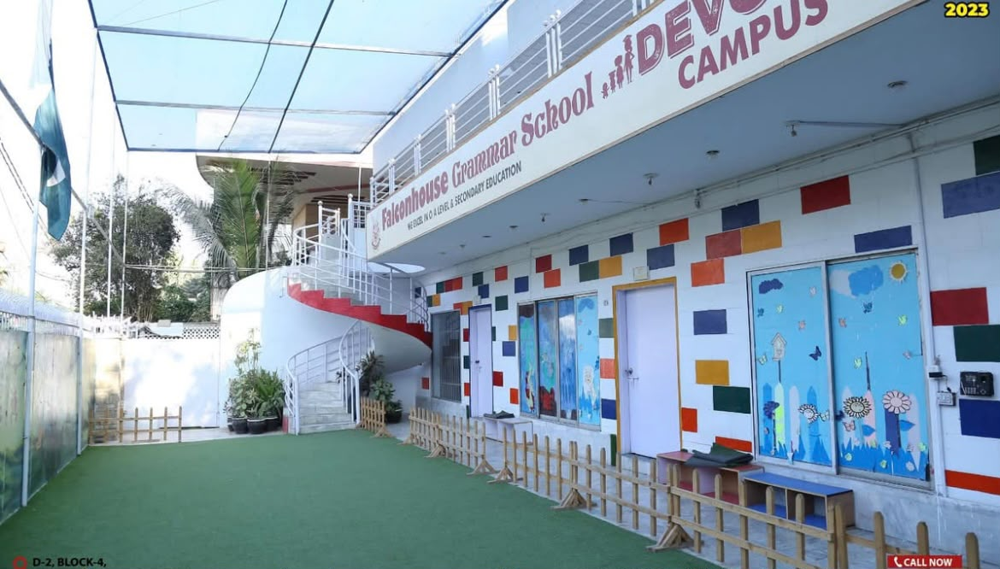

A LITTLE ABOUT ME
My Journey So Far
I am Aamna Siddiqui, a Software Engineering student at NED University of Engineering and Technology. I am interested in programming, technology and creative problem-solving. I enjoy learning new concepts and applying them through practical projects.
WHERE IT ALL BEGAN
My Education
My academic journey through school, college and university.

NED University of Engineering and Technology
B.E. Software Engineering
Currently pursuing my undergraduate degree, developing my foundation in software development and computing.

BAMM PECHS Government College
Intermediate — Computer Science
Studied Computer Science and developed an interest in computing and technology.

Falconhouse Grammar School
Secondary School Education
Completed my school education and built the academic foundation for my future studies.
WHAT I AM DEVELOPING
Technical Skills
Technologies and abilities I am learning and practising as a student.
Programming
Python
Programming Fundamentals
Web Development
HTML5
CSS3
Core Abilities
Problem Solving
Logical Thinking
Tools
Microsoft Office
Development Tools
LEARNING THROUGH PRACTICE
Academic & Practical Experience
My experience so far comes from university coursework, programming practice and group projects.
Python Programming Projects
Practised Python through small applications involving loops, conditions, functions, lists and problem-solving.
FocusFlow — Group Project
Working on a student productivity application with task management and progress-tracking features.
Web Development Coursework
Created basic web pages using HTML5 and CSS3 as part of my learning.
LOOKING AHEAD
Always Learning. Always Building.
I believe every project and new concept is an opportunity to improve. My goal is to strengthen my technical foundation and grow into a skilled Software Engineer.